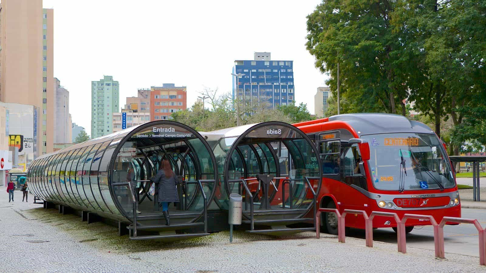

Whether you plan on setting down in Brazil or just looking to have some fun, Curitiba is one of the best cities Southern Brazil has to offer. If you like European cities you will definitely love Curitiba. Which feels like a mix between Latin American and European culture.

Like the rest of Southern Brazil, Curitiba offers top notch infrastructure. The infrastructure might not be as good as the one from developed countries,but it certainly gets close.
Unfortunately, in recent years the infrastructure degraded a bit, due to Brazil being under it’s worst economic recession in history, but like the rest of Southern Brazil, Curitiba’s infrastructure is still of higher quality than the rest of Brazil.
Curitiba’s Jardim Botanico covered in snow
For those who hate Latin America’s sunny tropical weather like me, I’ve got good news for you! Like the rest of Southern Brazil, Curitiba has a Subtropical Highland climate which means it’s not as hot nor as sunny as most of South America and sometimes it even snows in the city. Europeans will feel like they are at home. Cold fronts from Antarctica bringing cold winds and rain, comes very often to Curitiba and the rest of Southern Brazil.
Curitiba offers a wide variety of things to do during the night
With the many options of activities, different nightclubs and pubs the young men out there won’t ever feel bored during their nights in Curitiba. He will always find new places to have fun partying and trying to game chicks or just enjoy a bonding time with his bros.
Curitiba’s Rua das Flores
Like the rest of Southern Brazil, Curitiba has some of the highest standards of living if compared to other cities in Brazil. Curitiba’s population are mostly composed of high middle class and high class individuals.

This is useful for those ones planning on starting a family in Brazil or had to temporarily relocate in here due to work reasons. Curitiba is home to many bilingual schools that offer an education in English or German alongside Portuguese. From kindergarten to high school, these bilingual schools will give the chance of your children to become fluent in two languages. The famous International School of Curitiba is a good option to those from English speaking countries.
The streets of Curitiba and other cities from Southern Brazil are much less violent than Rio de Janeiro or São Paulo. However, just because the crime rates are lower in here, it doesn’t mean that you can walk around holding a sign saying “Please rob me!” I still recommend you to take the same safety measures that you would if you were visiting any other big city in the world. Yes, there is crime in the city, but if you have some common sense and don’t let your guard down chances are that you won’t be robbed and you will enjoy your stay in here.
Ponta do Sul beach, Parana is only 76.11 miles away from Curitiba
Curitiba might be a landlocked city, but that doesn’t stop you from exploring the beautiful Southern Brazilian Coast that is a few miles away from Curitiba. In less than two hours of a road trip you can get to see the beautiful coastal towns Southern Brazil has to offer. Some of them include Pontal do Sul, Ilha do Mel, Pontal do Paraná, Praia de Leste, Matinhos,Caiobá, Guaratuba and so on.

Curitiba has several girls of Polish, German, Ukranian and Italian descent
For the young men just looking to have some fun or the conservative Christian men, Curitiba has girls that attend requisites for both parties. For the young man just looking to have some fun, I advise him to look for girls in the pubs and nightclubs the city has to offer. Bonus points if you have a Brazilian friend to be your wing man and help you break the ice with the locals.
As for the older men out there looking for a more serious relationship or wife material, I advice him to pick one of the many churches the city has to offer and start frequenting their church services and events. While every Church has their share of fake Christians, you will always find a group of real Christians who follow God’s guidelines to live a godly life.
If you are into blondes, gingers or asians then you will love this city! Due to the mass immigration of Germans, Polish, Ukrainians, Italians and Japanese. Curitiba offers girls from various ethnicities.
Thanks to Curitiba’s European cultural background, the city offers a wide variety of Christian Churches from various branches of Christianity such as Catholic, Lutheran, Baptist, and Orthodox. Curitiba offers several options to faithful Christians of all branches of Christianity
Curitiba’s German community doing their annual gatherings to preserve their cultural roots
The City has a very rich cultural story, thanks to the mass immigration of Germans, Polish, Ukrainians, Italians and Japanese. Nowadays the city is home to many descendant of those immigrants who do their best to keep their cultural roots intact by enforcing them through cultural events and teaching their children the tongue of their ancestors. It’s not hard to find fluent speakers of German or Italian in Curitiba.

As the saying goes “There’s no sunshine without rain.” Curitiba is home to many high class individuals and this come with a cost. Many of the young men of the high classes were raised with their parents paying their tuition, cars, houses, and getting them recommended for jobs. This leads to spoiled leftist adults, who always got their way in everything and suffer from Peter Pan syndrome.
Thus don’t be surprised if you find yourself talking with friends and girls and struggle to explain to them concepts like hard work, economy, and why socialism always fails. But still I’d say this is a very minimal issue Curitiba faces if compared to having to worry about being robbed or murdered in the violent streets of Rio de Janeiro.
Orthodox Christian Brazilians of Ukrainian descent celebrating Easter in Curitiba
Curitiba can be both a great destination for those just looking to travel and “have some fun” or for those looking for a fresh start, such as the German man tired of seeing Germany and its culture being destroyed by Angela Merkel’s SJW policies or the American tired of seeing his homeland being desecrated by Cultural Marxism and Globalism.
However, don’t come in here hoping for streets made of gold or angelic blondies that respect men and will beg to date you. Like the rest of the world, Brazil suffers from the same Cultural Marxist fungus that is destroying Western culture. But with a population that possesses strong regional identity and political views, I can safely say that it will take a while before Cultural Marxism is able to completely vandalize Southern Brazil and its culture as it did to the rest of Brazil, America and Germany.
Read More: 6 Reasons Why Rio de Janeiro Sucks